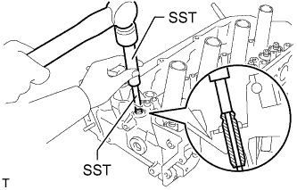

CYLINDER HEAD > REPLACEMENT |
| 1. REPLACE INTAKE VALVE GUIDE BUSH |
Heat the cylinder head to approximately 80 to 100°C (176 to 212°F).
Place the cylinder head on wooden blocks.
|  |
Using SST and a hammer, tap out the intake valve guide bush.
Using a caliper gauge, measure the bush bore diameter of the cylinder head.
| Item | Specified Condition |
| STD | 10.285 to 10.306 mm (0.4049 to 0.4057 in.) |
| O/S 0.05 | 10.335 to 10.356 mm (0.4069 to 0.4077 in.) |
Select a new valve guide bush.
| Item | Specified Condition | |
| Bush Bore Diameter | 10.285 to 10.306 mm (0.4049 to 0.4057 in.) | 10.335 to 10.356 mm (0.4069 to 0.4077 in.) |
| Use Bush | STD | O/S 0.05 |
| Item | Bush Diameter |
| STD | 10.333 to 10.344 mm (0.4068 to 0.4072 in.) |
| O/S 0.05 | 10.383 to 10.394 mm (0.4088 to 0.4092 in.) |
 |
Using SST and a hammer, tap in a new intake valve guide bush to the standard protrusion height.
| *1 | Protrusion Height |
Using a sharp 5.5 mm reamer, ream the guide bush to obtain the standard oil clearance between the intake valve guide bush and intake valve stem.
| 2. REPLACE EXHAUST VALVE GUIDE BUSH |
Heat the cylinder head to approximately 80 to 100°C (176 to 212°F).
Place the cylinder head on wooden blocks.
Using SST and a hammer, tap out the exhaust valve guide bush.
Using a caliper gauge, measure the bush bore diameter of the cylinder head.
| Item | Specified Condition |
| STD | 10.285 to 10.306 mm (0.4049 to 0.4057 in.) |
| O/S 0.05 | 10.335 to 10.356 mm (0.4069 to 0.4077 in.) |
Select a new exhaust valve guide bush.
| Item | Specified Condition | |
| Bush Bore Diameter | 10.285 to 10.306 mm (0.4049 to 0.4057 in.) | 10.335 to 10.356 mm (0.4069 to 0.4077 in.) |
| Use Bush | STD | O/S 0.05 |
| Item | Bush Diameter |
| STD | 10.333 to 10.344 mm (0.4068 to 0.4072 in.) |
| O/S 0.05 | 10.383 to 10.394 mm (0.4088 to 0.4092 in.) |
Using SST and a hammer, tap in a new exhaust valve guide bush to the standard protrusion height.
| *1 | Protrusion Height |
Using a sharp 5.5 mm reamer, ream the exhaust valve guide bush to obtain the standard oil clearance between the exhaust valve guide bush and exhaust valve stem.
| 3. REPLACE SPARK PLUG TUBE |
Apply adhesive to the end of a new spark plug tube.
| *1 | Adhesive |
Using a wooden block and hammer, tap in the spark plug tube to the specified protrusion height.
| *1 | Cylinder Head Top Surface |
| *2 | Protrusion Height |
| 4. REPLACE RING PIN |
Remove the ring pins.
Using a plastic-faced hammer, tap in new ring pins to the cylinder head.
| *A | for Bank 1 | *B | for Bank 2 |
| *1 | Width | *2 | Height |
| *3 | Protrusion Height | - | - |
| Item | Height | Width | Protrusion |
| Ring pin A | 11 mm (0.433 in.) | 11 mm (0.433 in.) | 5.5 to 6.5 mm (0.217 to 0.256 in.) |
| Ring pin B | 10 mm (0.394 in.) | 11 mm (0.433 in.) | 3.5 to 6.5 mm (0.138 to 0.256 in.) |